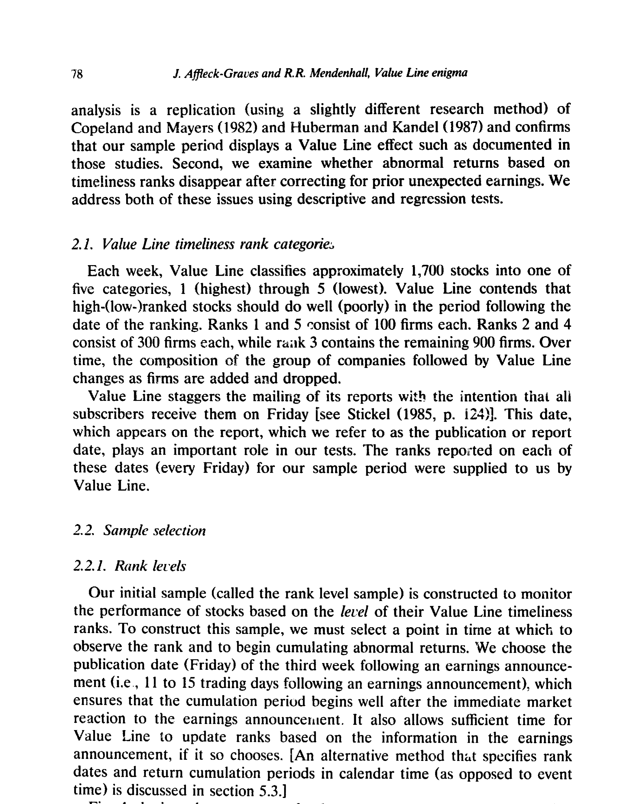
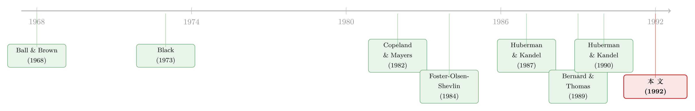

「股神」Value Line 的秘密，原来早就写在财报里
本文读的是 Affleck-Graves & Mendenhall (1992, Journal of Financial Economics)：曾被无数教科书奉为「市场无效」铁证的 Value Line 之谜 (Value Line enigma)，其实只是 后盈余公告漂移 (post-earnings-announcement drift, PEAD) 换了一张脸——一旦控制住公司上一期的盈余惊喜，Value Line 评级的预测力就荡然无存；反过来，控制住 Value Line 评级之后，盈余惊喜照样能解释未来的异常收益。一个异象，吃掉了另一个异象。
1 引言：两个各自成名的「异象」
上世纪八九十年代的金融学界，有两件让「有效市场」信徒坐立不安的事。
第一件，叫 Value Line 之谜。Value Line 是当时全世界最大的投资咨询机构，每周给约 1,700 家公司的股票打一个「及时性 (timeliness)」排名，从 1（最好）到 5（最差），声称排名高的股票接下来会跑赢、排名低的会跑输。偏偏它还真说中了：Black (1973) 发现 1965–1970 年间一档股票显著跑赢五档；Copeland and Mayers (1982) 在 1965–1978 的区间里看到排名与异常收益近乎单调的关系；Huberman and Kandel (1987) 进一步证明，即便控制了公司规模，一、二档依然跑赢四、五档。这套「无非是把公开信息排个序」的把戏，竟年复一年地战胜市场，于是它被写进了 Copeland-Weston、Elton-Gruber、Sharpe-Alexander 等一摞经典教材，成了市场无效的活教材。
第二件，叫后盈余公告漂移。Ball and Brown (1968) 最早注意到：一家公司公布盈余之后，如果是「好消息」（实际盈余超过预期），它的累计异常收益会继续向上漂；如果是「坏消息」，则继续向下漂。这个漂移在 Watts (1978)、Rendleman, Jones, and Latané (1982)、Foster, Olsen, and Shevlin (1984)、Bernard and Thomas (1989) 等一系列研究里被反复复制，结实得让人无从辩驳。（关于市场对盈余消息「慢半拍」的反应，可参见《新闻里那条「坏消息」，市场为什么总要慢半拍才信？》。）
两个异象，各有各的拥趸，各有各的文献。多年里，它们被当作两条独立的证据，分别指控市场无效。
可是，真的是两条吗？
2 一个被忽略的线索：Value Line 的「配方」
本文的全部张力，来自一个看似不起眼的观察——Value Line 到底是怎么给股票排名的。
翻开 Bernhard (1979) 对 Value Line 评级方法的官方描述，作者发现，决定及时性排名的几个标准里，有两个直接就是盈余惊喜的度量：
- 第一个叫「盈余动量 (earnings momentum)」，定义是「季度每股盈余的同比变化」。这恰恰等价于：当你用一个不带漂移的四季度季节性随机游走 (seasonal random walk, SRW) 模型来生成预期盈余时，所得到的盈余惊喜（见 Brown and Kennelly 1972）。
- 第二个叫「季度盈余惊喜 (quarterly earnings surprise)」，它直接用 Value Line 分析师自己的盈余预测来算预期。
换句话说，Value Line 给股票打分时，本来就把「实际盈余减预期盈余」这件事当成了核心配料。而盈余惊喜，又正是后盈余公告漂移的发动机。
到这里，一个自然的怀疑就浮出水面了：如果 Value Line 的排名本质上是在替你计算盈余惊喜，那么「高排名股票跑赢」会不会根本不是什么神秘的选股能力，而只是盈余漂移在排名这件外衣下的另一种说法？
这就是全文要一路追下去的那一个核心问题。
3 识别策略：两个样本，一把尺子
要回答「Value Line 之谜是不是 PEAD 的马甲」，作者的思路非常干净：先分别确认两个异象在同一段样本里都存在，再想办法把它们「对质」。
为此他们构造了两个样本。
第一个叫排名水平样本 (rank level sample)。Value Line 既然声称「当前的排名」就是对未来收益的信号，那就在一个固定时点观察排名、并从该时点开始累计收益。作者选的时点是「盈余公告后第三周的发布日（周五）」，即公告后第 11 到 15 个交易日——这样既避开了公告当下那几天的即时反应，又给了 Value Line 足够时间把财报信息消化进排名里。这个排名日记作 RD，最终样本有 11,064 笔观测。
第二个叫排名变动样本 (rank change sample)。直觉上，Value Line 真要有本事，最该体现在它主动决定改一档排名的那一刻。所以作者只保留那些「在两次相邻盈余公告之间发生过排名变动」的股票，变动的发布日记作 RC，样本 4,553 笔——它是排名水平样本的一个子集。
整个事件的日历时间序列，作者用一张图交代得清清楚楚：t=F_1 是 Value Line 发布盈余预测，t=A_1 是第一次盈余公告，t=RC 是排名变动，t=RD 是第三周的排名水平观测日，t=A_2 是下一次盈余公告。

Figure 1: depicts the sequence of relevant events. At Value Line
这里有个常被忽略的事实（见后文 Table 1）：Value Line 改排名改得极其频繁——51.5% 的股票连续保持同一档不超过 13 周，92% 在一年内会被重新分类，而且极端档（1、2、4、5）比中间的第 3 档更容易被频繁调整。正因为变动如此之密，「排名水平」和「排名变动」两个样本其实高度相关。
至于「跑赢跑输」用什么尺子量，作者沿用 Foster, Olsen, and Shevlin (1984)、Dimson and Marsh (1986)、Bernard and Thomas (1989) 的规模控制组合 (size control portfolio) 法：一只股票的异常收益，等于它的实际收益，减去它年初所属的 NYSE/AMEX 规模十分位组合（等权）的收益。
$$AR_{n,t} = R_{n,t} - \bar{R}_{n,t}$$
其中 \(AR_{n,t}\) 是观测 \(n\) 在第 \(t\) 天的异常收益，\(R_{n,t}\) 是原始收益，\(\bar{R}_{n,t}\) 是同规模十分位等权组合的当日收益。把它在时间上累加，就得到累计异常收益 (cumulative abnormal return, CAR)：
$$CAR_n(t_1, t_2) = \sum_{t=t_1}^{t_2} AR_{n,t}$$
作者分别累计 60 个和 120 个交易日（大致对应 Copeland-Mayers 用的 13 周和 26 周区间）。
而衡量盈余惊喜的关键变量，是「上一次盈余公告」的预测误差 (forecast error)。作者把它定义成价格平减后的形式：
注意这里的双口径设计：\(\hat{E}_{1,n}\) 同时用了 Value Line 分析师预测和 SRW 模型两种来源——它们正好对应 Value Line「季度盈余惊喜」和「盈余动量」两条评级标准。然后按 \(FE_n\) 的大小把样本分成十分位（decile）。这把尺子，就是用来和 Value Line 排名「对质」的那把。
4 数据
盈余数据来自 Compustat 季度工业文件，分析师盈余预测来自 Value Line Investment Survey，收益数据来自 CRSP 日收益文件，公司规模用普通股市值衡量。Value Line 每周（每个周五）发布的排名由 Value Line 直接提供。样本期为 1982 年 1 月至 1987 年 2 月（Table 1 的换手频率统计用的是 1982 年 1 月至 1986 年 12 月）。观测在样本期内分布均匀，没有哪一段时间主导整个样本。
5 第一步：两个异象，量级居然一样大
作者先要确认：在自己这段样本里，两个异象都还活着。
他们取 Value Line 的极端档（1 档和 5 档）与盈余预测误差的极端十分位（最高和最低），分别算 60 天和 120 天的平均 CAR。结果如表 2 所示——四组里，一档股票和最高盈余惊喜十分位都录得显著为正的异常收益，五档股票和最低惊喜十分位都显著为负。两个异象，确实都在。
但真正耐人寻味的，是它们的量级。
在排名水平样本里，Value Line 一档股票 60 天平均赚 1.91%（t=3.52），而最高盈余惊喜十分位赚 2.17%（t=4.40）；Value Line 五档股票平均亏 1.62%（t=−2.49），最低惊喜十分位亏 2.17%（t=−3.93）。120 天口径下，一档累计 2.87%、最高惊喜十分位 3.28%，五档 −2.49%、最低十分位 −2.19%。
一句话：Value Line 排名能赚到的钱，和单凭盈余惊喜能赚到的钱，几乎一样多。如果两者是相互独立的两种本事，这种量级上的「巧合」未免太刻意了。
作者很克制地提醒：Value Line 一档与最高惊喜十分位并不相互独立（五档与最低十分位同理），所以表 2 里无法对两组做正式的差异检验。这一节的量级比较，只能当作描述性证据——它提出怀疑，但还不能定案。
6 真正关键的一步：时间会留下指纹
量级相同还不够。作者要找一个能把因果方向钉死的特征——时间。
逻辑是这样的：如果 Value Line 之谜确实是盈余漂移驱动的，那么 Value Line 的排名变动就应该紧跟在盈余公告之后（因为它在对财报做反应），而且这种「跟得紧」的变动，其后续表现应该最强（因为 Bernard and Thomas (1989, table 4) 早就指出，漂移在公告后不久最猛）。
先看时间分布。Table 3 给出：一次盈余公告到随后那次 Value Line 排名变动，中位数只有 8 天；而一次排名变动到下一次盈余公告，中位数却长达 54 天。这个不对称太说明问题了——
Value Line 是在对盈余公告做反应，而不是在预测它。
接着是全文最漂亮的一刀。作者把极端档（1 档和 5 档）的观测，按「上一次盈余公告到排名变动之间隔了几天」切成两半：不到 8 天的，和 8 天及以上的。如果谜底真在盈余漂移里，那么「贴着公告改的排名」应该有强劲的后续表现，而「拖了很久才改的排名」则应该没什么动静。
结果（Table 4）几乎是教科书级别的干净：
- 变动发生在公告 7 天内：一档减五档的 60 天 CAR 差异是
4.7%（t=3.22），120 天差异8.9%（t=4.18），统计上都高度显著。 - 变动发生在公告 8 天及以后：同样的差异骤降到
0.4%（60 天，不显著）和2.0%（120 天，不显著）。
同样是 Value Line 一档对五档，只因为「改排名」这个动作离上一次财报近还是远，预测力就从「显著的近 5%」塌缩到「不到 1% 的噪声」。Value Line 排名本身没变，变的只是它和盈余公告的时间距离。这意味着：排名的预测力并不来自排名，而来自它借来的那点盈余漂移。
7 反转：把盈余惊喜抽走，Value Line 就「失灵」了
到这里，怀疑已经很重，但还差临门一脚——直接把盈余惊喜从样本里「抽掉」，看 Value Line 还剩下什么。
作者于是只留下那些盈余惊喜很小的公司：在两套惊喜度量（Value Line 分析师口径与 SRW 口径）下，都落在中间四个十分位（4、5、6、7）的观测。对这批「财报平平无奇」的股票，再去看 Value Line 排名能不能预测收益。
答案是：几乎不能。在八个情形里（两样本 × 两累计期 × 两极端档），有六个的极端档收益符号与 Value Line 排名所预测的方向相反。也就是说，抽掉盈余惊喜之后，Value Line 之谜不仅消失，甚至还反了号。
最后，作者用类似 Copeland and Mayers (1982) 的回归方法做正式检验，把两件事互相控制：
- 控制住先前的盈余惊喜之后，基于 Value Line 排名的异常收益与零没有显著差异；
- 反过来，控制住 Value Line 排名之后，盈余惊喜依然能显著解释检验期的异常收益。
这是一个干净利落的非对称结论：盈余惊喜能「吸收」掉 Value Line 效应，Value Line 效应却吸收不掉盈余惊喜。谁是因、谁是果，至此再无悬念。
值得一提的是，在此之前 Huberman and Kandel (1990) 曾给 Value Line 之谜提供过另一种解释——Value Line 有本事识别出与预期收益变动相关的状态变量。本文不否认那种可能，只是给出了一个更简单的答案：你不需要什么神秘的状态变量，盈余漂移就够了。（这种「一个朴素机制吃掉一堆异象」的叙事，和《不需要那些「玄学风险」：当价值、动量、规模的超额收益，全被分析师的预期错误吃掉》如出一辙。）
8 文献脉络
把这条线索拉直，故事其实很清楚。
源头是两条平行的河。一条是 Ball and Brown (1968) 开启的后盈余公告漂移，经 Watts (1978)、Rendleman-Jones-Latané (1982)、Foster-Olsen-Shevlin (1984)，到 Bernard and Thomas (1989) 把方法论与可能成因梳理成熟。另一条是 Value Line 之谜，从 Black (1973) 的早期证据，到 Copeland and Mayers (1982) 系统的绩效评估个案，再到 Huberman and Kandel (1987) 控制规模后的确认。

两条河长期被当作独立的水系。直到 Huberman and Kandel (1990) 试图为 Value Line 之谜寻找「状态变量」式的理性解释，问题才被逼到台前：这个谜，到底是市场无效，还是另有出处？本文 (1992) 站在这个分叉口上，给出的回答既不诉诸新风险因子，也不诉诸什么独门选股术——它把 Value Line 之谜还原成了已被充分记录的盈余漂移。一个异象，原来一直寄居在另一个异象的身体里。
评论与延伸（Q&A + 研究方向）
(a) 几个可能的疑问
Q：把一个异象「归约」成另一个异象，市场不还是无效吗？这有什么意义？
意义在于「减少自由度」。原来文献里像是有两份独立的无效性证据，分别需要解释；本文证明它们其实是一回事，于是真正待解释的对象只剩一个——后盈余公告漂移。对一个谜「祛魅」，本身就是进步：它把 Value Line 那层「专业选股能力」的神秘外衣揭掉了，告诉你不必去找什么状态变量。
Q：作者怎么排除「是盈余漂移其实来自 Value Line 的信息」这个反方向？
靠时间的不对称。盈余公告到排名变动中位数只有 8 天，排名变动到下次公告却有 54 天（Table 3）；而且只有「贴着公告改」的排名才有预测力（Table 4）。如果是 Value Line 在领先，排名变动不该系统性地尾随财报。再加上控制盈余惊喜后 Value Line 效应归零、反之不归零的非对称回归结果，方向基本被钉死。
Q：规模控制组合这把尺子可靠吗？换个基准结论会变吗？
这是当时（Foster-Olsen-Shevlin、Bernard-Thomas）的标准做法，好处是绕开了 Copeland and Mayers (1982) 在挑选无偏基准期上的难题。作者还用连续复利收益和持有期收益分别复算，结果与正文几乎一致；并在第 5 节做了日历时间（而非事件时间）等稳健性检验。当然，用今天的 Fama-French/规模-价值-动量框架重做，是否会析出残余的 Value Line 效应，仍值得一验。
Q：Table 5 里六分之八的符号「反号」，是不是过度解读？
作者措辞谨慎，只说「几乎没有 Value Line 效应」，并以反号作为「盈余惊喜对该谜至关重要」的旁证，而非主证据。主证据仍是控制变量后的正式回归。把反号当成「Value Line 其实选反了」来读，会超出数据能支撑的范围。
Q：这对「市场是否有效」的大辩论意味着什么？
它本身并不裁决市场有效与否——盈余漂移这个谜还杵在那里。它真正的贡献是「合并同类项」：把异象动物园里两只看似不同的动物，证明成同一物种。这类工作和后来 Fama-French 把一堆异象往因子上收编、或把异象归因于分析师预期误差，是同一种学术冲动。
Q：Value Line 的支持者还能怎么辩护？
一种辩护是：即便 Value Line 排名「只是」在打包盈余惊喜，对一个无法自行计算 SRW/分析师惊喜的普通订户来说，订阅 Value Line 仍是一种低成本获取漂移信号的方式——它有商业价值，只是没有「超越公开信息」的学术神秘性。本文回应的是后者。
(b) 几个可能的研究问题与提案
1）把同样的「归约检验」搬到公司债市场。 - 【经济故事】信用评级（穆迪/标普）的变动，是否也只是滞后地在追踪公司基本面/盈余惊喜？如果评级下调系统性地尾随财报恶化，那么「评级变动事件」的债券价格漂移，可能也是某种已知信息漂移的马甲。 - 【可行性】中。需要 TRACE 债券成交、Compustat 盈余、评级变动日。识别可照搬本文的「时间距离切分」：按评级变动距上次财报的天数分组。难点在债券流动性噪声大、评级变动稀疏。
2）外资持有人是否「领先」还是「尾随」盈余惊喜？ - 【经济故事】常有人说外资是「聪明钱」，能预判基本面。但若像 Value Line 一样，外资的加减仓其实尾随财报，那么「外资买入预测收益」就可能只是盈余漂移的另一张脸。 - 【可行性】中高。需要持仓面板（如 13F 或各国披露）+ 盈余公告日。识别上可比较「财报前 vs 财报后」的持仓变动对未来收益的预测力，做与本文平行的时间切分。
3）流动性异象与盈余漂移的纠缠。 - 【经济故事】盈余公告附近流动性会系统性变化；一些「低流动性溢价」是否在公告窗口被放大，从而与漂移共线？ - 【可行性】中。需高频成交/价差数据 + 盈余事件，用本文式的控制回归互相剔除。诚实地说，流动性与漂移的内生性很强，识别难度高于本文。
4）机器排名时代的「新 Value Line 之谜」。 - 【经济故事】今天的量化选股信号（动量、盈余惊喜、分析师修正打包成的综合评分）层出不穷。本文的方法论提供了一个通用诊断：任何「综合评分能预测收益」的发现，都该先问一句——它是不是只是把某个已知异象重新打了个包？ - 【可行性】高。公开因子数据齐备，照搬「控制 A 看 B、控制 B 看 A」的非对称回归即可，几乎是可以立刻动手的复制类项目。
我的判断
这是一篇「以少胜多」的论文：没有新模型，没有花哨的计量，靠的是一个被所有人忽略的制度细节（Value Line 的评级配方里写着盈余惊喜），加上一刀切得极准的时间切分。它的说服力恰恰来自结论的非对称性——盈余惊喜能吞掉 Value Line 效应，反之不行；这种单向性，比任何 t 值都更难用巧合解释。
要说对识别的担忧，主要有三点。其一，Value Line 一档与最高惊喜十分位天然不独立，使表 2 的量级比较只能停留在描述层面，真正的重活全压在第 4 节回归上。其二，规模控制组合是 1980 年代的尺子，用今天的多因子基准重做，能否析出 Value Line 的残余预测力，仍是开放问题。其三，样本只有 1982–1987 短短五年，又恰好横跨 1987 年崩盘前夜，外部效度有限。
后续我最想看到的，是把这套「归约检验」标准化、并系统地扫一遍异象动物园：到底有多少看似独立的异象，其实共享同一个发动机？本文给出的，正是这把可以反复使用的手术刀。
参考文献
- Ball, R. (1978). Anomalies in relationships between securities' yields and yield surrogates. Journal of Financial Economics 6, 103–126.
- Ball, R., & Brown, P. (1968). An empirical evaluation of accounting income numbers. Journal of Accounting Research 6, 159–178.
- Bernard, V. L., & Thomas, J. K. (1989). Post-earnings-announcement drift: Delayed price response or risk premium? Journal of Accounting Research (Suppl.) 27, 1–36.
- Bernhard, A. (1979). Value Line Methods of Evaluating Common Stocks. Arnold Bernhard, New York.
- Black, F. (1973). Yes, Virginia, there is hope: Tests of the Value Line ranking system. Financial Analysts Journal 29, 10–14.
- Brown, P., & Kennelly, J. W. (1972). The informational content of quarterly earnings: An extension and some further evidence. Journal of Business 45, 403–415.
- Christie, A. A. (1987). On cross-sectional analysis in accounting research. Journal of Accounting and Economics 9, 231–258.
- Copeland, T. E., & Mayers, D. (1982). The Value Line enigma (1965–1978): A case study of performance evaluation issues. Journal of Financial Economics 10, 289–322.
- Dimson, E., & Marsh, P. (1986). Event study methodologies and the size effect: The case of UK press recommendations. Journal of Financial Economics 17, 113–142.
- Foster, G., Olsen, C., & Shevlin, T. (1984). Earnings releases, anomalies, and the behavior of security returns. The Accounting Review 59, 574–603.
- Holloway, C. (1981). A note on testing an aggressive investment strategy using Value Line ranks. Journal of Finance 36, 711–719.
- Huberman, G., & Kandel, S. (1987). Value Line rank and size. Journal of Business 60, 577–589.
- Huberman, G., & Kandel, S. (1990). Market efficiency and Value Line's record. Journal of Business 63, 187–216.
- Rendleman, R. J., Jones, C. P., & Latané, H. (1982). Empirical anomalies based on unexpected earnings and the importance of risk adjustment. Journal of Financial Economics 10, 269–287.
- Watts, R. L. (1978). Systematic 'abnormal' returns after quarterly earnings announcements. Journal of Financial Economics 6, 127–150.